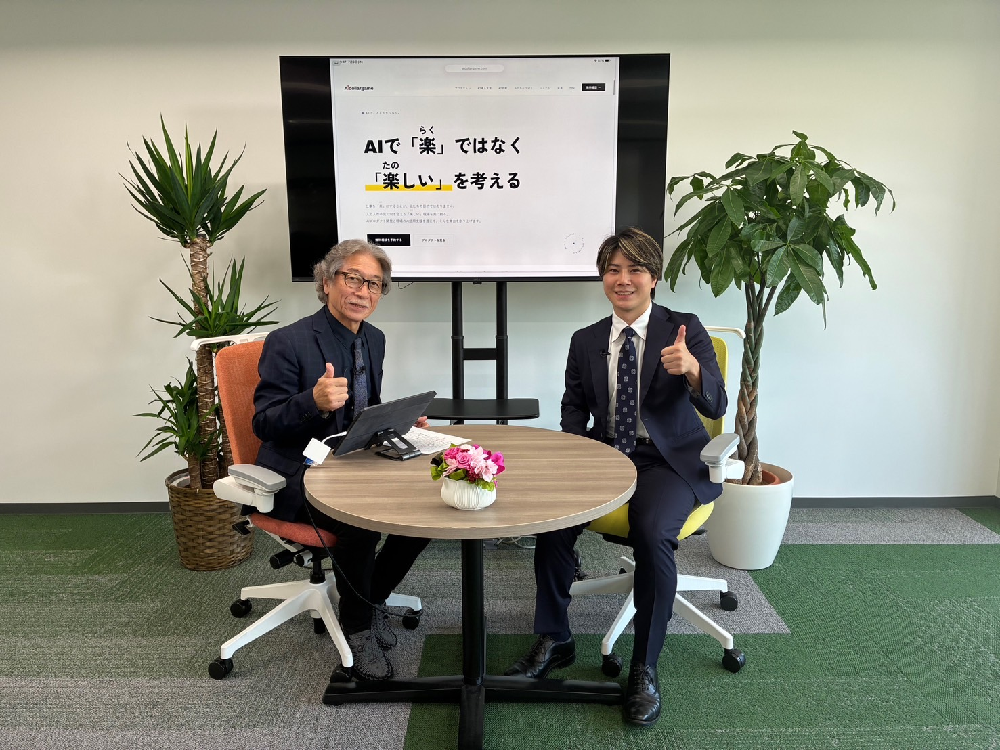

このたび、当社代表の佐藤徳之介が、一般社団法人東京ニュービジネス協議会（東京NBC）の公式YouTube番組「beyond business channel ＮＥＯ」のメンバー紹介コーナーに出演し、収録を行いました。テーマはAIdollargameの事業について。何をやっている会社なのか、独自性はどこにあるのかを、インタビュー形式でお話ししています。
収録は2026年7月9日に行い、公開は2026年9月23日（秋分の日）を予定しています。公開されましたら、このページと公式SNSであらためてご案内します。
インタビューでお話ししたこと
「作業はAIに、仕事は人に」という考え方のもと、中小企業のAI導入から日々の運用までをまるごとお手伝いしていること。主力のAIチャットエージェントをはじめ、業種に特化したAIを自社で開発していること。そして、私たちが考える独自性についてお話ししました。
代表・佐藤が繰り返し伝えたのは、独自性は「若さ」にあるということです。
「私たちの世代にとって、AIは勉強して使うものではなく、最初からそこにあるものです。息をするようにAIを使う感覚のまま、経営の現場に入っていける。それが何よりの強みだと思っています。」
くわしい内容は、9月23日の公開をお楽しみにお待ちください。
東京NBC（東京ニュービジネス協議会）とは
今回の出演媒体である東京NBCは、新しい事業（ニュービジネス）の振興を目的に活動している経済団体です。前身は1985年に設立され、ニュービジネスの振興に寄与する団体として発足しました。現在は一般社団法人として、次のような活動を行っています。
- ニュービジネス振興のための政策提言
- ニュービジネスに関する研究・情報提供
- 起業家の育成・発掘の支援事業
- 会員企業の経営強化や、経営者どうしの学び合いのための委員会・研究部会
会員数は約880名（2024年3月末時点）にのぼり、業種・世代を越えた経営者が集うコミュニティになっています。当社代表・佐藤も、この東京NBCに2026年5月に入会したメンバーの一人です。今回のメンバー紹介コーナーへの出演も、その縁でお声がけをいただいたものです。
出演のご案内
- 番組
- 東京NBC 公式YouTube「beyond business channel ＮＥＯ」メンバー紹介コーナー
- 出演者
- 佐藤徳之介（株式会社AIdollargame 代表）
- テーマ
- AIdollargameの事業紹介・独自性についてのインタビュー
- 収録日
- 2026年7月9日
- 公開予定
- 2026年9月23日（秋分の日）